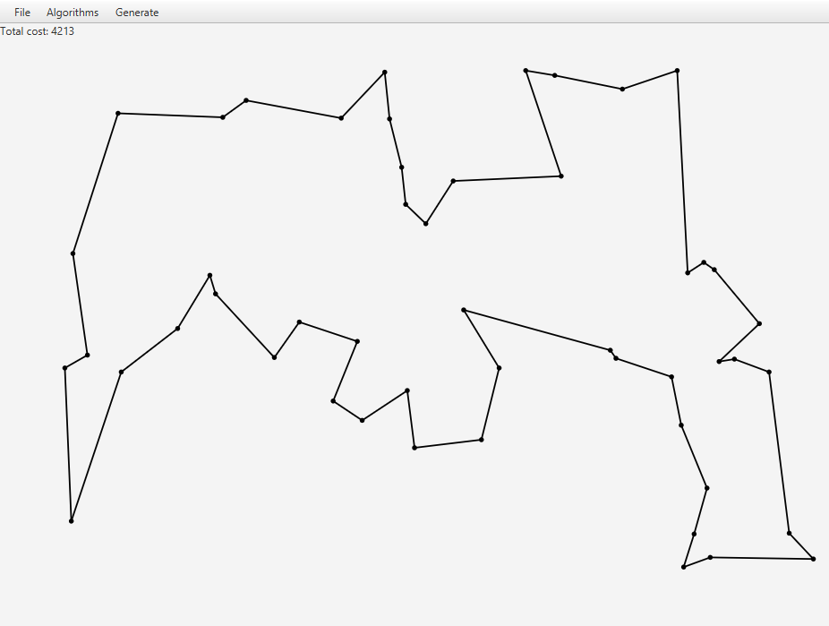
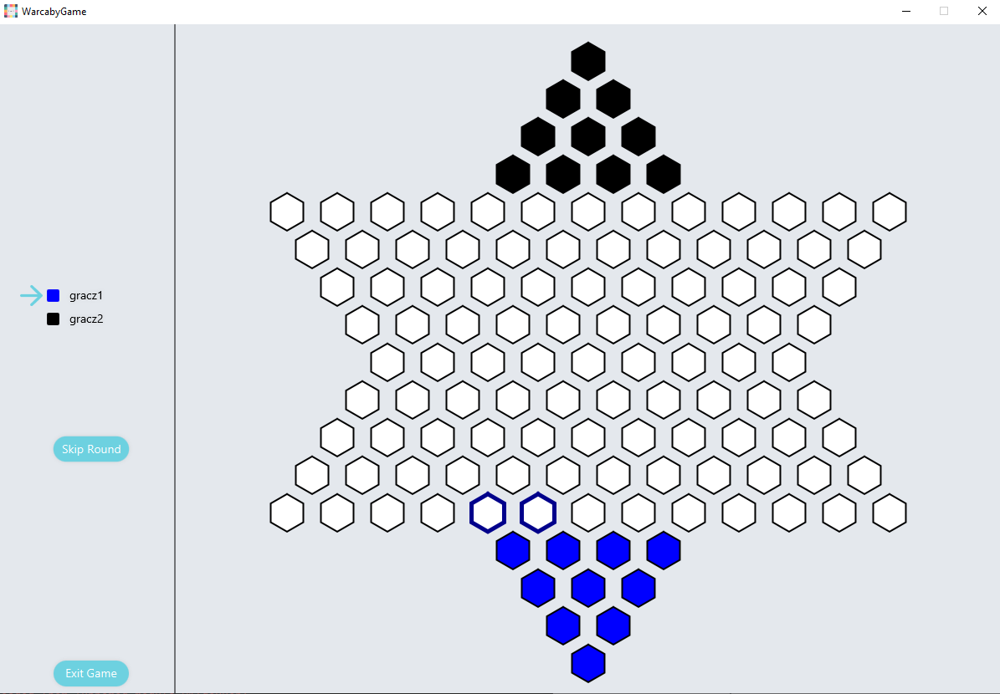

My Projects
This page shows some of the projects i have worked on.
HomeChinese Checkers
During Java cours at University i have worked on creating an online game of chinese checkers.

My Code Example
public class NaturalKiller implements Killer{
boolean first;
@Override
public void kill(Population population) {
first = true;
Random rand = new Random();
long bc = population.getBestSpecimen().getCost();
int size = population.getSpecimens().size();
int threshold = (int)(0.7*size);
List toDelete = new ArrayList<>();
int count = 0;
for(Specimen specimen: population.getSpecimens()){
double prob = deathFunction(bc, specimen.getCost(), specimen.getAge(), size, population.getExpectedSize());
if(prob > rand.nextDouble()){
toDelete.add(specimen);
count++;
if(count > threshold){
break;
}
}
}
population.getSpecimens().removeAll(toDelete);
}
private double deathFunction(long bc, long c, long age, int size, int expectedSize){
double bias = 0.1;
if(c == bc && first){
first = false;
return 0;
}
double val1 = costFunction(bc, c);
double val2 = ageFunction(age);
return Math.tanh((val1*10 + val2 + bias))*(size/(double)expectedSize);
}
private double costFunction(long bc, long c){
return (c-bc)/(double)bc;
}
private double ageFunction(long age){
double a = 0.000444043;
double b = -0.0271067;
double c = 0.326663;
return a*age*age+b*age+c;
}
}